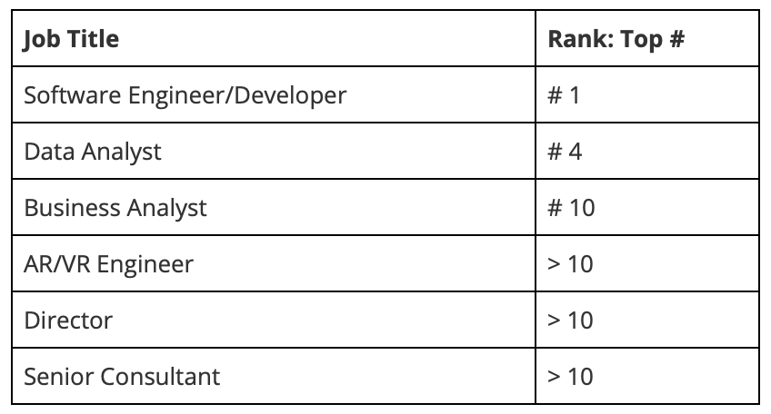

Industry Data
Current job titles our group’s ideal jobs consist of:
- Business Analyst
- Senior Consultant
- AR/VR Tools Engineer
- Director
- Software Engineer/Developer
- Data Analyst/Software Developer
IT skills in the top #10:
(Top to Bottom = Highest in Demand to Lowest)
- SQL
- JavaScript
- React (web)
- Angular
- Microsoft Windows
- Docker
- Django
- Cloud
General skills in the top #10:
- Complex Problem Solving Skills
- Critical Thinking
- People Management
- Coordinating with Others
- Writing
- Communication
- Judgement/Decision Making
- Ability to work under pressure
- Customer Service Orientation
Top #3 IT-specific skills (not in required skill set):
- Cybersecurity
- Cloud Computing
- Data Analytics and Data Science
Top #3 general skills (not in required skill set):
- Adaptability
- Creativity
- Work Ethics
Having looked at the Burning Glass data, has the team’s opinion of their ideal jobs changed? Why or why not?
Sibel: My ideal job of being a Senior Consultant in Data Platforms and Advanced Analytics is more something I would like to work toward and get promoted to. Hence why my opinion hasn’t changed much since viewing the burning glass data. However, it has shown me what job titles are most in demand giving me more ideas of what other jobs are out there and in high demand. I have also discovered that software development, engineering and design is another ideal job of mine as I enjoy programming, and jobs like systems engineer, network engineer and software engineer are all part of the top job titles. I will be able to find more jobs and roles in IT engineering because it is a very broad and needed area of IT. JavaScript programming is also the second highest in demand IT skill, which is required for program engineering.